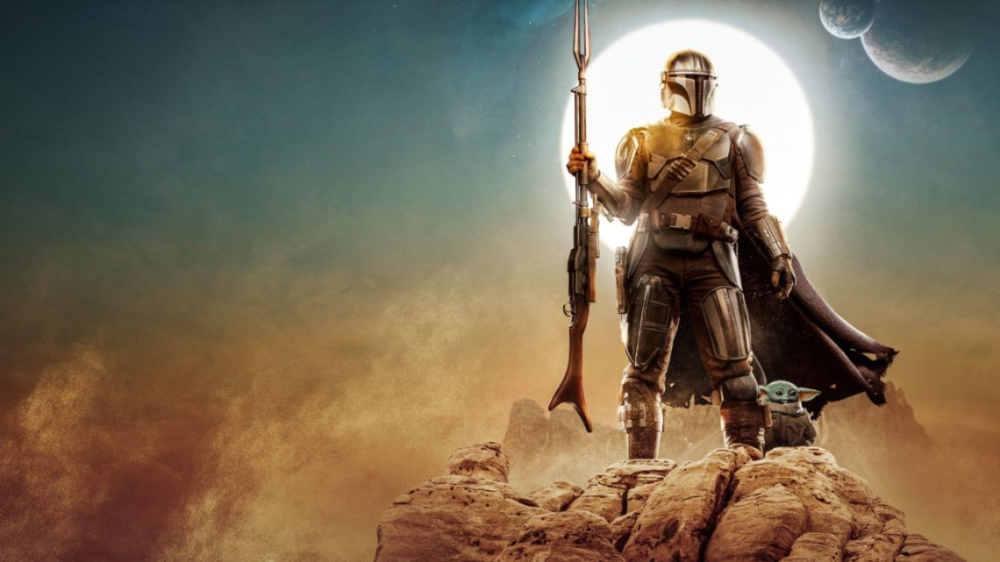

About Mando
He is a man of few words and is portrayed as a stoic and efficient warrior. Despite his tough exterior, he has a strong moral code and a soft spot for children, which is demonstrated through his interactions with the character known as "The Child" or "Baby Yoda."
Mando Traits
- Skilled Warrior
- Honorable
- Mysterious
- Loyal
Mando's Allies
It is difficult for the Mandalorian to make friends, having that, Grogu, is highly searched for by everyone in the Star Wars universe. However, along the journey, Mando has made a name for himself which allowed him, to gain a few great allies.